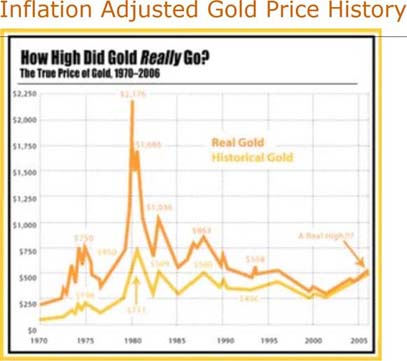
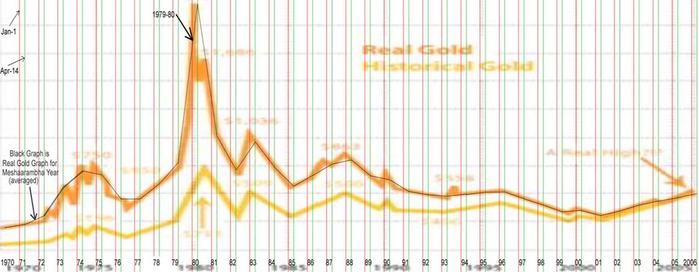
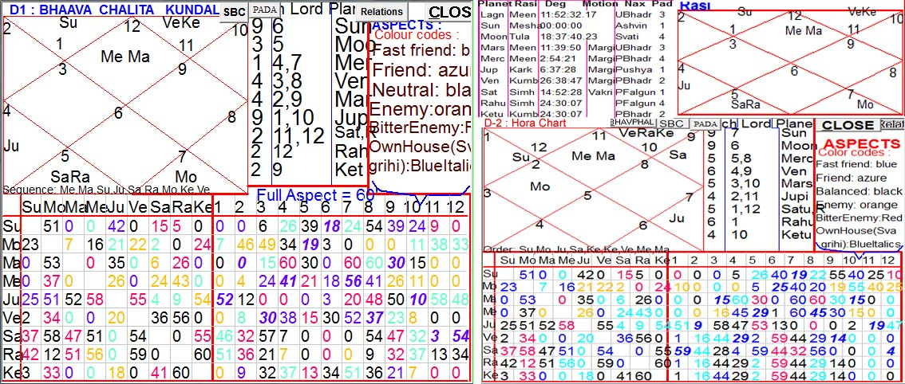
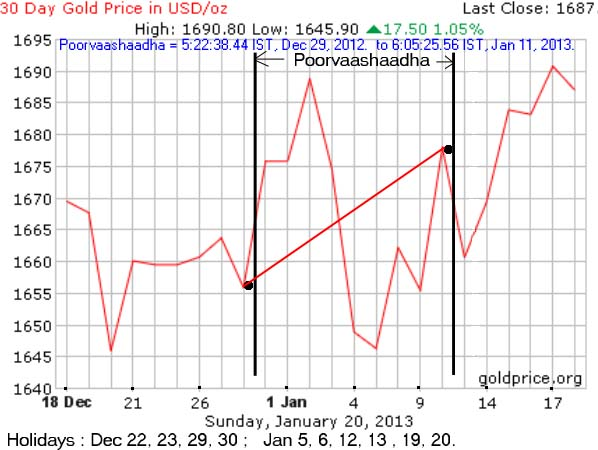
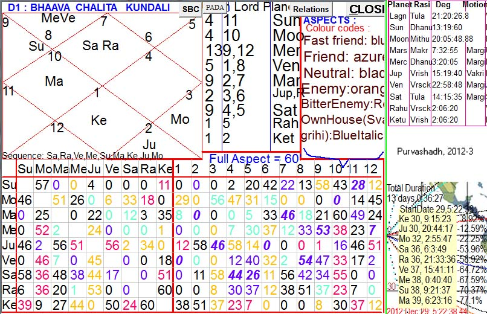
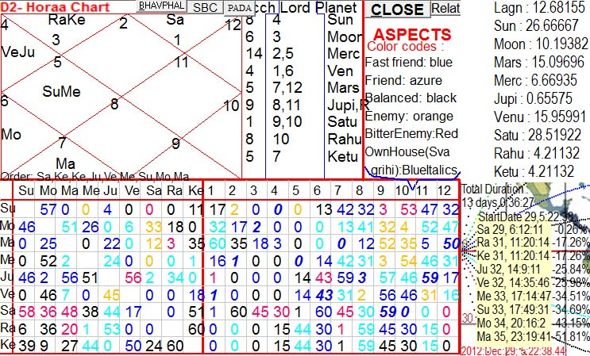

This article is based on Kundalee Software's output, with default options (SSS or Shri Surya Siddhānta for Ganita, using BPHS for Phalita). But with same input data, users can also opt for 'Drik' button in Kundalee software to view charts acrding to Drik Siddhānta (modern physical astronomy).
Exact Method of Gold Price forecasting is being illustrated in this article, which will be gradually expanded further.
As illustrated in the article Battle of Plassey, there are three levels of Prithvi-Chakra besides a fourth level for current chaert. Here, same technique is being employed for explaining the rise and fall in gold prices.
Method-1 : Level-1 (Solar Year) Horoscope of the World
International Gold Prices, like all other international events are regulated by the Prithvi Chakra (called "Padma Chakra" in Narapatijayacharyā, derived from the ancient divine text Ādi Yāmala Tantra) which is the Suryasiddhāntic Horoscope cast at the meridians of Mt Meru (Mt Kenya now) at the moment of Nirayana Mesha Samkrānti. This Prithvi Chakra is to be used not only for Gold prices or rain forecasting only, but for everything possible through astrology.
The relative prices of currencies are regulated by the astrological conditions of different nations according to their placement in different houses on the same Prithvi Chart. These findings have been tested over many years of data.
Here, we are concerned only with Gold Prices. To begin with, we should analyze the annual gold price rise for entire Solar Year beginning with Nirayana Sun's entry into Mesha (Aries), noa-a-days starting around Apr 14, just one fortnight after Financial Year.
The website http://goldprice.org/ provides Historic Gold Prices for short and long terms. Let us start with Real Gold Price : 1970 to 2006 .
The picture above is crude, but it is good for finding out the years with great rise or steep fall in real gold price.
Better graphs are available for finer details at same website (such as 2-year gold price or 36-year gold price), but they are not inflation-adjusted. Hence, let us start with this inflation-adjusted graph showing REAL prices of gold.
This picture has been worked on to make it more user friendly, as given in the picture below.
The year starting with Nirayana Sun's entry into Mesha is clearly demarcated in this second picture, and real gold price rise during such years has been given in averaged graph.
Now, let us find out the years with great rise or steep fall in real gold price, and analyze the Meshaarambha charts for those years.
1979-80 : Year with Highest Rise in Gold Price
Start Kundalee Software, select "Medini" in the folders exhibited in right side combo box at top of the initial data input page. Then , select "MeruWorldChart" in the top left combo there. Now, replace the year "1757" with 1979 in the year box on left (not the right side year box which is for desired year in individual horoscopy not needed in Medini Jyotyisha). Now, click "SHOW" without changing anything else, you will find the Suryasiddhāntic Prithvi Chakra on map for that year. Map is not needed for international gold price analysis, it is needed for regional variations according to regions in 12 houses. Hence, D-1 bhāvachalita , D-1 rāsi-chart and D-2 (Horā) charts as shown in picture below need to be analyzed. The picture below shows Suryasiddhāntic charts for Meshārambha Year 1979-80.
Gold is mainly rules by Jupiter, and Jupiter's relatives. In D-1, we find Jupiter exalted in 5H (5th house) as lord of lagna and 10H which is rājayoga of an exalted planet in trikona house. It is almost the best possible situation, and that is why highest rise in real gold price took place in recorded world history.
Why a benefic Jupiter makes Gold costlier ? Because Jupiter stands for wealth : BPHS (Brihat Parāshara Horā Shāstra) says in Kārakādhyāya that Jupiter is Kāraka (significator) for following bhāvas : 2, 5, 9 11, which are for wealth, income, fortune and intelligence without which wealth cannot be gained. Therefore, a benefic Jupiter in World Chart will increase wealth of the world, while quantity of gold does not rise with comparable ratio. Hence, equal amount of gold will be worth more wealth or money, and therefore gold will become costlier if planets affecting it are benefic and strong.
Now, make the same chart with physical astronomy (i.e., Drik), you will comaparatively much weaker Jupiter which has rājayoga by dint of being lord ofg lagna and 4H, but sitting neutrally in 7H with 8L (lord of 8H) Moon.
Similar comparison of SSS with Drik can be made for other years, and it will be clear that SSS works perfectly for all years for which we have reliable data, while Drik does not work satisfactorily with constant consistency.
1980-81 : Year with Greatest Fall in Gold Price
Next year 1980-81 shows a steep fall in gold price, evident from the first picture above.
Jupiter suffers from Kendrādhipati-dosha by dint of owning 7H and 10H. This affliction is accentuated through Jupiter's residence in 3H. There, conjunction with highly malefic 6LO + 11L Mars further aggravates the situation. Saturn and Rahu are enmically conjunct with Jupiter, worsening the situation. Retrogression of Jupiter further enhances the effect. 2L Moon sits in Jupiter's Meena sign enmically with strong 3L Sun and debilitated Mercury. All these forces combine to cause the greatest fall in gold price in recent few decades. Kundalee software may be used to see the charts.
1981-82 : Year with Considerable Fall in Gold Price
Next year 1981-82 shows a significant fall in gold price, evident from the first picture above.
Jupiter again suffers from Kendrādhipati-dosha by dint of owning 4H and 7H. This affliction is accentuated through enmical conjunction with Saturn and retrogression of both, but other bad factors of previous year are not repeated (for instance, instead in 3H, Jup sits in lagna, and malefic Mars is not associated with Jupiter). But 2L is afflicted by bitter enemy exalted Sun which is 12L and malefic Mars which is 3L + 8L, and debilitated Mercury. Hence, fall is gold price was significant but not as steep as in previous year, as evident in the first picture above.
1982-83 : Year with Considerable Rise in Gold Price
Next year 1982-83 shows a significant rise in gold price, evident from the first picture above.
Jupiter has rājayoga, being 1L + 4L, seated in house of income. Jupiter in 11th is normally not good, but it is good for finances. Jupiter sits in bitter enemy's house, which reduces the benefit, but retrogression of Jupiter increases the effect and therefore neutralizes the bad effect of enmical residence. 2L Saturn in 10H is also not bad in spite of being 3L, but Mars afflicts Saturn. Therefore, rājayoga of jupiter causes a significant rise in goldprice, but not very high due to afore-mentioned limiting factors.
1983-84 : Year with Considerable Fall in Gold Price
Next year 1983-84 presents a complex situation which needs careful analysis. Normally, astrologers do not analyze such situations carefully and therefore falter. Jupiter enjoys a rājayoga by dint of being 1L + 10L and conjunct with strong and benefic Ketu which is 9L. Jupiter was in neutral sign but Ketu was in its moola-trikona. Hence, gold should have risen, but actually it fell because of following factors :
While Jupiter itself was benefic, it was in neutral sign only, and had benefic influence of only planet Ketu, which was a node only and not a full planet. On the other hand, svagrihi malefic Venus sat in 2H of wealth, being 3L + 8L and enmical to Jupiter. 2L + 9L Mars was also svagrihi but could not be a benefic because it was combust in malefic 6L strong Sun. Besides evil effects of these two strong planets, kendrādhipati dosha of Mercury (4L + 7L) seated in enmical sign and enmical to Jupiter produced a powerful cumulative malefic effect which was stronger than the benefic effect of Ketu. Hence, fall in price in spite of benefic Jupiter.
1984-85 : Year with Considerable Fall in Gold Price
Next year 1984-85 also presents a complex situation : Jupiter in Kendra and in own sign but a fall in gold price. It is because of Jupiter's Kendrādhipati-dosha by dint of owning 7H and 10H in D1, which is further aggravated by Jupiter's Kendrādhipati-dosha D-2 too by dint of owning 4H and 7H amd sitting in bitter enemy's sign in D-2, its lord Mercury afflicted in 8H with malefic Sun.
If D-1's relevant planet/planets are strong then we can neglect D-2 if D-2's relevant planets are not strong. Such was the case in all previous years analyzed above (but not reported here). But in 1984-5, D-1 shows good as well as bad effects both, hence final outcome is shaped by D-2's malefic consequences. Kendrādhipati-dosha is strong for Jupiter, and has the potential of nullifying the benefic effect of svagrihi planet. We must analyze D-2 alongwith D-2 in all cases dealing with wealth/money/bullion/finances/stocks, etc.
1986-87 : Year with Slight Rise in Gold Price
1985-86 year Gold Price rose from $330.00 to $342.25 per oz in Meshaarambha year, a rise of 3.71%. But 1986-87 has 28.707% rise in Gold Price. Jupiter has Bhaavottama yoga of Varga-1 with D-2 (Hora), Jupiter in 3H. In D-9 Jupiter is svagrihi. Besides, Jupiter as well as its lord Saturn are in Moon's Hora. All these factors combine to produce a good result for wealth.
~~~~~~~~~~~~~~~~~~~~~~~~~~~~~
Method-1 : Level-2 (Solar Month) Horoscope of the World
Use kundalee Software's solar-month buttons to make World Charts for desired solar month (= Level-2 of VPC or Varsha-Pravesha-Chakra, Level-2 is Maasa-Pravesha Chakra), and then compare the D-1 and D-2 charts with actual gold prices for that period from following website :
http://goldprice.org/gold-price-history.html
~~~~~~~~~~~~~~~~~~~~~~~~~~~~~
Method-1 : Level-3 (Solar Pratyantara) Horoscope of the World
It is for twelfth part of solar monthly chart, during 2.5 degrees of Sun.
Use kundalee Software's solar-month buttons to make World Charts for desired solar pratyantara (= Level-3 of VPC or Varsha-Pravesha-Chakra) , and then compare the D-1 and D-2 charts with actual gold prices for that period from following website :
http://goldprice.org/gold-price-history.html
~~~~~~~~~~~~~~~~~~~~~~~~~~~~~
Method-1 : Level-4 (Solar Sookshma) Horoscope of the World
It is for twelfth part of solar Pratyantara chart, during 0.2083333 degrees of Sun, which approximates for about five hours.
Use kundalee Software's solar-month buttons to make World Charts for desired solar pratyantara (= Level-4 of VPC or Varsha-Pravesha-Chakra) , and then compare the D-1 and D-2 charts with actual gold prices for that period from following website :
http://goldprice.org/gold-price-history.html
~~~~~~~~~~~~~~~~~~~~~~~~~~~~~
Method-1 : Level-5 (Solar Praana) Horoscope of the World
It is for twelfth part of solar Sookshma chart, during 0.017361111 degrees of Sun, which approximates for about 25 minutes of time.
Use kundalee Software's solar-month buttons to make World Charts for desired solar pratyantara (= Level-5 of VPC or Varsha-Pravesha-Chakra) , and then compare the D-1 and D-2 charts with actual gold prices for that period from following website :
http://goldprice.org/gold-price-history.html
~~~~~~~~~~~~~~~~~~~~~~~~~~~~~
Method-2 (Solar Nakshatra) Horoscope of the World
Nakshatra charts are better analyzed for rainfall &c. It is better to stick to all five levels of Method-1, without mixing Method-2 and Method-3 into it in order to maintain methodological consistency.
30-day Gold Price from 18 Dec 2012 to 21 Jan 2013
The picture above has been prepared from the screenshot taken from http://goldprice.org/gold-price-history.html#30_day_gold_price
This website keeps on updating data. Hence, after some time you will see a different 30-days graph due to changed time.
The picture above shows daily ups and downs of gold price from 18 Dec 2012 to 21 Jan 2013. Nirayan Suryasiddhāntic Sun's entry into Poorvāshādha Nakshatra (asterism) at the meridians of Mt Meru (or Mt Kenya, see MeruWorldChart in Medini folder of Kundalee Software's input data page) occurred at 5:22:38 IST (Indian Standard Time) on 29th Dec 2012 and lasted till 6:05:26 IST on 11th Jan 2013. This period of Poorvāshādha has been marked by two thick vertical black lines in the picture above. Holidays for stock exchanges are noted at the bottom of the picture above. The picture below is D-1 bhāva-chalita chart for the meridians of Mt Meru at the juncture of Nirayana Sun's entry into Poorvāshādha, made by entereing "20" (number of nakshatra) in Kundalee software's bottom text box in data input page, and year at left as 2012 (which is for 2012-3 year beginning with Sun's entery into Nirayana Mesha around mid-April).
First of all, let us analyze the total rise in gold price during Sun's residence in Poorvāshādha. The line with label "Jan 1" is preceded by Dec-31 line, preceded by Dec-28 line because Dec 29 and 30 had gold markets closed. The region between lines for Dec 31 and Jan 1 is the whole day on Dec-31. We have to read other dates and their graphs in same manner. Gold prices at the onset and ending moments of Poorvāshādha are indicated by a thick red line going upwards, which shows a positive rise in gold price during Poorvāshādha, a rise in gold price by nearly 22 dollars per ounce or +1.3% during Poorvāshādha which is a steep rise. Why such a rise ?
Now, we have to compare the gold price graph with the D-1 and D-2 chart's astrological results.
D-1 Chart for Sun in Poorvāshādha from 29th Dec 2012 to 11th Jan 2013
Jupiter languished in bitter enemy's sign in 8H as lords of 3H and 6H and retrograde, hence highly malefic. Hence Jupiter should cause a sign ificant fall in gold price. But 2L (lord of 2H and of 7H) Mars was exalted in 4H. Exalted 2H must be regarded as very powerful but 3L + 6L retrograde Jupiter in 8H in bitter enemy's sign is also no less powerful in opposite sense. Hence, benefic Mars neutralizes malefic Jupiter. Now, 2H contains slightly benefic Venus as 1L + 8L and in friendly sign, which is neutralized by 9L + 12L Mercury in enmical sign and combust in malefic Sun (11L). Thereore, D-1 suggests that gold price graph during Poorvāshādha should be flat, without any significant rise or fall. But D-2 has different results, which change the final outcome, as explained below.
D-2 Chart for Sun in Poorvāshādha from 29th Dec 2012 to 11th Jan 2013
The picture below is D-2 chart, degrees of planets in D-2 without rāshis at top right.
D-2 has Jupiter as 8L + 11L retrograde and exalted in 3H with lagnesh 1L + 6L Venus. Jupiter is malefic, but exalted 11L is good for financial matters, but enemy Venus is not good. 2L Mercury is benefic by dint of being 5L too, and combust in moola-trikon's Sun in 4H. Hence, 2L is highly benefic. Debilitated (neecha) Saturn in 12H has VRY (vipareet rāja-yoga) and is highly benefic for gold by dint of being 9L + 10L and friendly to Jupiter. Although D-2 has a much less Vimshopaka strength with respect to D-1, exalted planets in D-2 have power to change the results of D-1. Except Venus, all other planets are friendly to Jupiter. That is why gold prices rose appreciably during Poorvāshādha.
For gold forecasting, we need to combine the results of D-1 and D-2 carefully, giving higher vimshopaka strength to D-1 unless the D-2 planets are extraordinarily strong. D-9 is also effective in gold forecasting, but much less important than D-1 and D-2 for financial matters, hence D-9 and other divisionals may be ignored. D-9 and some other divisionals like D-60 will be useful for minute to minute fluctuations in gold prices needed by day traders, but it will be extremely difficult to make those charts so quickly as to be useful in minute to minute actions in day trading.
Explanation of Daily Movements in Gold Prices during Poorvāshādha
This is the most splendid and hitherto secret part of mundane astrology. The chart at the solar entry into a nakshatra controls the overall performance of phenomena during the entire period of that nakshatra, but also controls the day to day movements according to conditions of various houses and planets in 12 signs starting from Nirayana Mesha (Aries), in the following manner :
Mesha will regulate the events during the first 1/12th portion of that Nakshatra (or of that year if the chart is of Meshārambha Varsha Pravesha Chart). Thus, one rāshi will excercize its influence for slightly more than one day in the case of a Nakshatra chart. This rule applies for all divisionals (shodasha vargas).
~~~~~~~~~~~~~~~~~~~~~~~~~~~~~
Method-3 : Level-3 (Solar Half-Degree) Horoscope of the World
It is better to stick to all five levels of Method-1, without mixing Method-2 and Method-3 into it in order to maintain methodological consistency.
~~~~~~~~~~~~~~~~~~~~~~~~~~~~~
Method-4 (Current) Horoscope of the World and of Stock Exchanges
It is most difficult method, but most useful for second to second analysis of bullion prices for day-trading.
~~~~~~~~~~~~~~~~~~~~~~~~~~~~~